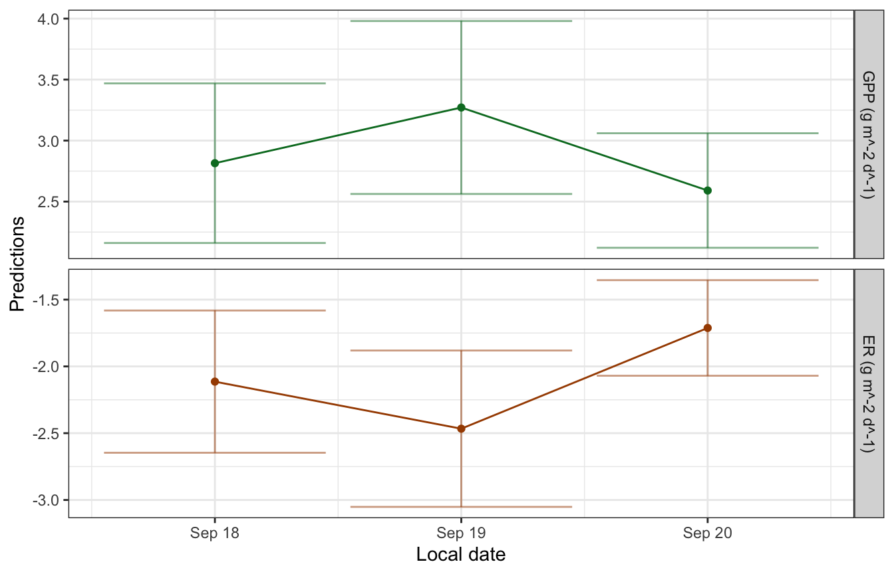
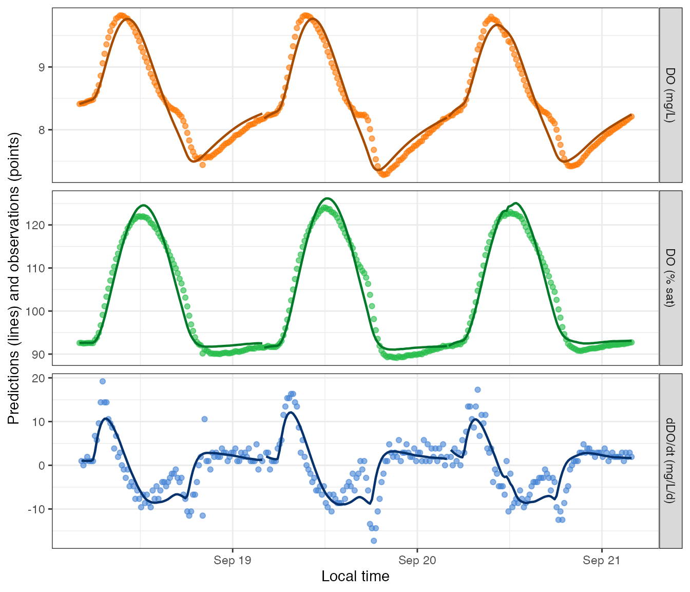

This file provides an example of fitting an MLE (maximum likelihood estimation) model, following the general outline in the Quickstart tutorial.
As a reminder, there are four steps to fitting a metabolism model in
streamMetabolizer.
- Prepare and inspect the input data.
- Choose a model configuration appropriate to your data.
- Fit the model.
- Inspect the output.
Preliminaries
If you haven’t already installed the package, see the Installation tutorial.
Next load the R libraries. Only streamMetabolizer is
required to run models, but we’ll also be using dplyr to
inspect the results.
1. Preparing the input data
Load a small example dataset from the package (data are from French
Creek in Laramie, WY, courtesy of Bob Hall). We’ll use the
streamMetabolizer standard in defining our day to run from
4 am (day_start=4) to 4 am (day_end=28).
dat <- data_metab(num_days='3', res='15', day_start=4, day_end=28)2. Configuring the model
There are two steps to configuring a metabolism model in
streamMetabolizer.
- Identify the name of the model structure you want using
mm_name(). - Set the specifications for the model using defaults
from
specs()as a starting point.
2a. Choose a model structure
Call mm_name to choose a specific MLE model
name/structure. Here we will fit the default MLE model. Many others are
available (see Model Structures and
GPP and ER equations), but this one is
common and fast.
mle_name <- mm_name(type='mle')
mle_name## [1] "m_np_oi_tr_plrckm.nlm"2b. Set the specifications
Having chosen a model, we next need to define a list of
specifications for that model. The specs function creates a
list appropriate to the model we chose.
mle_specs <- specs(mle_name)
mle_specs## Model specifications:
## model_name m_np_oi_tr_plrckm.nlm
## day_start 4
## day_end 28
## day_tests full_day, even_timesteps, complete_data, pos_discharge, p...
## required_timestep NA
## init.GPP.daily 8
## init.ER.daily -10
## init.K600.daily 10See ?specs for definitions of all specifications. Note
that most of the specifications in that help file are omitted from the
output of specs(mle_name) above - this is because MLE
models are simple and don’t have many parameters to set. Any of those
parameters that are included in mle_specs can be modified,
either by calling specs() again or by replacing that value
in the mle_specs list. Here is a command that sets the the
inital values of GPP, ER, and K600 for the likelihood maximization.
(I’ve done this just for illustration; the model results aren’t affected
by these particular changes for this particular dataset, and you will
seldom need to edit these values.)
mle_specs <- specs(mle_name, init.GPP.daily=2, init.ER.daily=-1, init.K600.daily=3)3. Fitting the model
Now actually fit the model using the metab function.
It’s optional, but sometimes helpful, to include some sort of
metadata in the info, as I’ve done above. I’ve chosen to
put the metadata in a character vector, but metadata can take any format
you like.
4. Inspecting the model
Models show lots of relevant information if you simply print them at the command line.
mm## metab_model of type metab_mle
## User-supplied metadata:
## site source
## "French Creek, WY" "Bob Hall"
## streamMetabolizer version 0.12.1
## Specifications:
## model_name m_np_oi_tr_plrckm.nlm
## day_start 4
## day_end 28
## day_tests full_day, even_timesteps, complete_data, pos_discharge, p...
## required_timestep NA
## init.GPP.daily 2
## init.ER.daily -1
## init.K600.daily 3
## Fitting time: 1.551 secs elapsed
## Parameters (3 dates):
## date GPP.daily GPP.daily.lower GPP.daily.upper ER.daily
## 1 2012-09-18 2.814768 2.160463 3.469073 -2.113856
## 2 2012-09-19 3.271369 2.562592 3.980145 -2.466321
## 3 2012-09-20 2.590855 2.121370 3.060339 -1.712003
## ER.daily.lower ER.daily.upper K600.daily K600.daily.lower K600.daily.upper
## 1 -2.646426 -1.581285 31.05944 24.49085 37.62803
## 2 -3.051683 -1.880959 33.23987 26.63806 39.84167
## 3 -2.069836 -1.354171 28.71773 24.02290 33.41257
## msgs.fit
## 1
## 2
## 3
## Predictions (3 dates):
## date GPP GPP.lower GPP.upper ER ER.lower ER.upper
## 1 2012-09-18 2.814768 2.160463 3.469073 -2.113856 -2.646426 -1.581285
## 2 2012-09-19 3.271369 2.562592 3.980145 -2.466321 -3.051683 -1.880959
## 3 2012-09-20 2.590855 2.121370 3.060339 -1.712003 -2.069836 -1.354171
## msgs.fit msgs.pred
## 1
## 2
## 3You can also extract specific pieces of information using designated
accessor functions. For example, the info and
data are saved in the fitted model object and can be pulled
out with get_info and get_data,
respectively.
get_info(mm)## site source
## "French Creek, WY" "Bob Hall"## date solar.time DO.obs DO.sat depth temp.water light
## 1 2012-09-18 2012-09-18 04:05:58 8.41 9.083329 0.16 3.60 0
## 2 2012-09-18 2012-09-18 04:20:58 8.42 9.093063 0.16 3.56 0
## 3 2012-09-18 2012-09-18 04:35:58 8.42 9.105254 0.16 3.51 0
## 4 2012-09-18 2012-09-18 04:50:58 8.43 9.112582 0.16 3.48 0
## 5 2012-09-18 2012-09-18 05:05:58 8.45 9.127267 0.16 3.42 0
## 6 2012-09-18 2012-09-18 05:20:58 8.46 9.137079 0.16 3.38 0
## DO.mod
## 1 8.410000
## 2 8.421013
## 3 8.431849
## 4 8.442322
## 5 8.452734
## 6 8.463325We can also get information about the model fitting process.
get_fitting_time(mm) # the time it took to fit the model## user system elapsed
## 1.524 0.026 1.551
get_version(mm) # the streamMetabolizer version used to fit the model## [1] "0.12.1"
get_specs(mm) # the specifications we passed in## Model specifications:
## model_name m_np_oi_tr_plrckm.nlm
## day_start 4
## day_end 28
## day_tests full_day, even_timesteps, complete_data, pos_discharge, p...
## required_timestep NA
## init.GPP.daily 2
## init.ER.daily -1
## init.K600.daily 3There is a function to plot the daily metabolism estimates.
plot_metab_preds(mm)
There is also a function to plot the dissolved oxygen predictions (lines) along with the original observations (points).
plot_DO_preds(mm)
You can output the daily and instantaneous predictions to data.frames for further inspection.
predict_metab(mm)## date GPP GPP.lower GPP.upper ER ER.lower ER.upper
## 1 2012-09-18 2.814768 2.160463 3.469073 -2.113856 -2.646426 -1.581285
## 2 2012-09-19 3.271369 2.562592 3.980145 -2.466321 -3.051683 -1.880959
## 3 2012-09-20 2.590855 2.121370 3.060339 -1.712003 -2.069836 -1.354171
## msgs.fit warnings errors
## 1
## 2
## 3
head(predict_DO(mm))## date solar.time DO.obs DO.sat depth temp.water light
## 1 2012-09-18 2012-09-18 04:05:58 8.41 9.083329 0.16 3.60 0
## 2 2012-09-18 2012-09-18 04:20:58 8.42 9.093063 0.16 3.56 0
## 3 2012-09-18 2012-09-18 04:35:58 8.42 9.105254 0.16 3.51 0
## 4 2012-09-18 2012-09-18 04:50:58 8.43 9.112582 0.16 3.48 0
## 5 2012-09-18 2012-09-18 05:05:58 8.45 9.127267 0.16 3.42 0
## 6 2012-09-18 2012-09-18 05:20:58 8.46 9.137079 0.16 3.38 0
## DO.mod
## 1 8.410000
## 2 8.421013
## 3 8.431849
## 4 8.442322
## 5 8.452734
## 6 8.463325